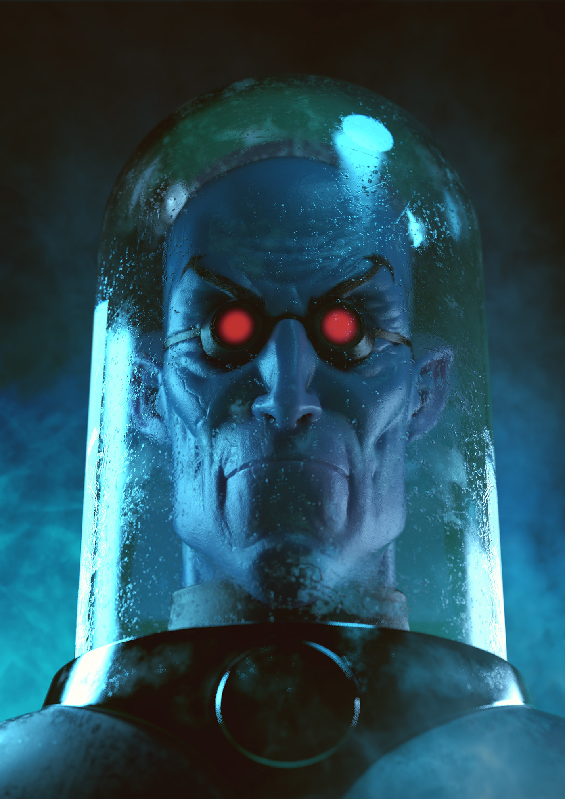

SR.FRIO
⠀Nome real: Victor Fries
⠀⠀Altura: 1.83
⠀⠀Peso: 86
⠀⠀Olhos: Azuis
⠀Cabelo: Nenhum
⠀⠀Condição: Procurado
⠀⠀Parceiros: Nenhum
História
Victor Fries era um brilhante criogenista, cuja amada esposa, Nora, foi aflingida por uma doença degenerativa fatal, Ele a colocou em animação suspensa enquanto procurava obsessivamente uma cura. Mas a corporação que mantinha sua pesquisa, e a vida de Nora, desativou seus experimentos, provocando um acidente que transformou o corpo de Fries em uma forma de vida de sangue frio que deve sempre ser mantida abaixo de zero grau. Em temperatura ambiente, ele morre. Portando várias armas congelantes, ele usa uma armadura protetora na busca para reviver a esposa e vingar seu destino, pelo qual ele, em parte, responsibiliza o Batman.